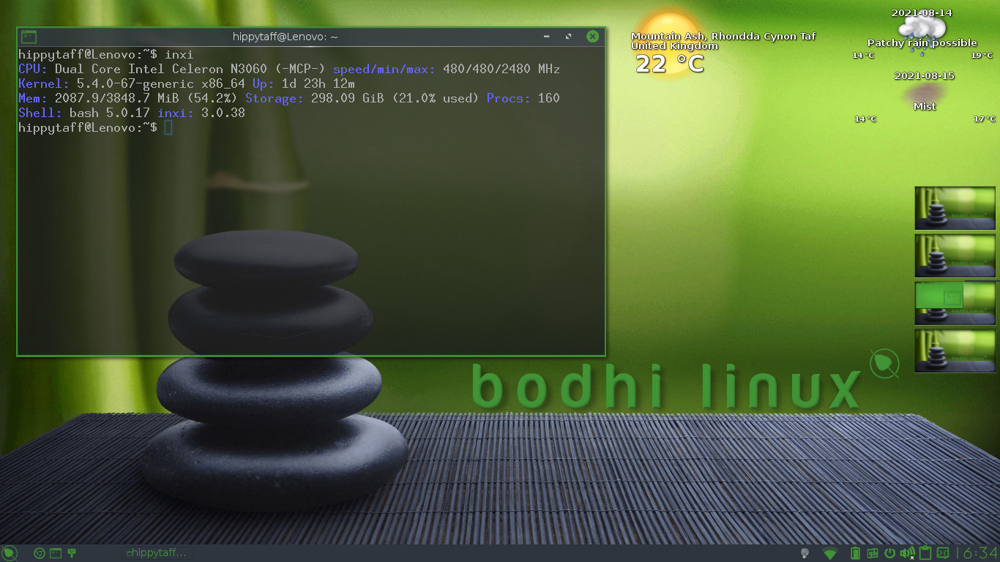
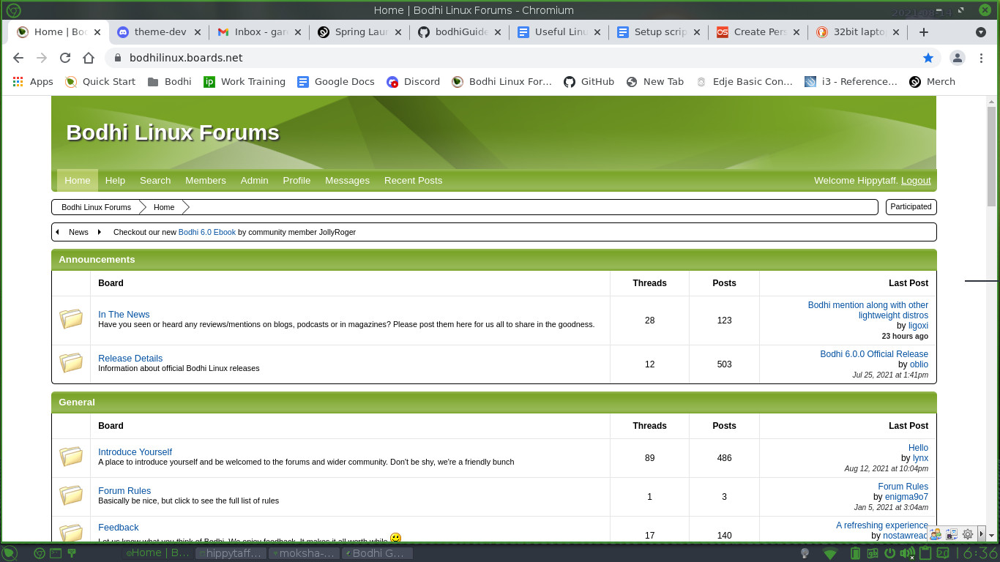
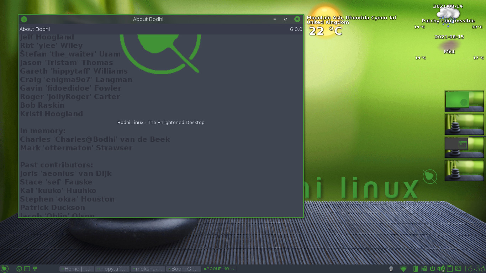

The Bodhi Guide to Moksha
This Bodhi Guide to Moksha is intended to be your complete resource for using Bodhi Linux with the Moksha Window Manager. This guide is intended for everyone , from new Bodhi Linux users to those who hope to join the Bodhi Linux team.
What is Bodhi Linux
Bodhi Linux, in short, is Ubuntu LTS (currently 22.04) using Moksha Window Manager, a fork of Enlightenment E17. Bodhi was originally developed by, Jeff Hoogland, but is now headed by lead developer Robert (Ylee) Wiley, with developer and Moksha guru Stefan (The Waiter) Umram. The team is continuing to grow, as is the wider community. Recently established Web-Dev Team headed by Eran Gelo and Codernic, and with a newly re-established responsive and welcoming forum and discord channel. The Bodhi community is known for being friendly and welcoming.
 

What is a Window Manager
According to Wikipedia, “[a] window manager is system software that controls the placement and appearance of windows within a windowing system in a graphical user interface … They work in conjunction with the underlying graphical system which provides required functionality such as support for graphics hardware, pointing devices, and a keyboard, and are often written and created using a widget toolkit.”
In non-technical terms, the Window Manager is essentially what the end user sees and interacts with, the "GUI" (graphical user interface). Over time, many Window Managers have been extended to become full-fledged Desktop Environments. A Desktop Environment is generally considered to be a Window Manager that integrates common applications and services along with the Window Manager.
One exciting part about Linux, and one of the ways it stands out from other operating systems such as Windows and OSX, is that the end user has a plethora of choices for how they can interact with their computer. This is partly, and perhaps most obviously, done through providing various Window Managers and Desktop Environments for users to choose from.
By default, Ubuntu Linux uses Gnome. Although great in many ways, Gnome is not known for being extremely fast, nor is it suited for older machines as it is large and consists of many applications, each with their own long list of dependencies. The current LTS release of Ubuntu recommends 4 GB of RAM and 25 GB of free hard drive space. With this large footprint, Ubuntu provides out-of-the-box support for most systems including for most graphics cards, sound cards, and even touch screens, but also brings many additional applications that may be used by some users while never used by others.
The goal of Bodhi Linux was and continues to be to bring combine the best parts of Ubuntu with the more streamlined, flexible, fast, and less resource-hungry Window Manager known as "Moksha". In other words, to bring an elegant Linux distribution at a fraction of the resource use of most other distributions while sacrificing none of the beauty or core functionality of Ubuntu.
What is Moksha Window Manager?
Moksha Window Manager is a fork of Enlightenment version 0.1.7 ("E17").
Bodhi Linux was originally built using the Enlightenment Window Manager. Although known as a Window Manager, Enlightenment stradles the line between a Window Manager and a Desktop Environment by bringing most of the functionality found in much more resource-hungry Desktop Environments.
The first version of Enlightenment was released in 1997. In December 2000 it was completely re-written using the Enlightenment Foundation Libraries (EFL), and remains in active development to this day. For years, E17 was used as the Window Manager of Bodhi Linux. In 2015, founder and lead developer Jeff Hoogland, began a fork of the E17 Window Manager. This fork, specifically designed for Bodhi Linux, became known as "Moksha" (pronounced “mohk-shuh”). Moksha is Sanskrit in origin just like Bodhi. It means “emancipation, liberation, or release”
A full telling of why Moksha Window Manager was developed can be found here: Introducing the Moksha Window Manager.
Enlightenment, Moksha, and Bodhi Linux
E17 was the natural choice as a Window Manager in Bodhi Linux, as it fit in perfectly with two of the most important Bodhi Linux ideals:
Minimalism - A default install of Enlightenment will run on less than 100 MB of RAM. That is far less than most modern Window Managers, not to mention complete Desktop Environments. But it doesn't come at the expense of great looks or functionality. Enlightenment is one of the most elegant Window Managers available, and is highly extensible through the use of Modules.
User Choice: Enlightenment is probably the most highly configurable Window Manager in existence, so you can make your system look and work the way you want.
Moksha Window Manager was born with these same ideals in mind, taking the best parts of what E17 brought to the table, while fixing, modifying, and expanding on what did not quite fit right with the project. The Moksha development team upstreams patches where appropriate and will always be greatful for the fact that without E17 and its developers, Bodhi Linux and the Moksha Window Manager would never have been possible.
|
Prev: |
Contents: |
Next: |